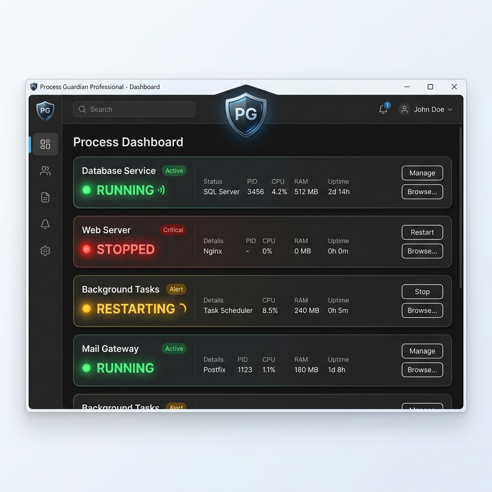

Process Guardian
Keep your essential applications alive. Automate recovery, minimize downtime, and ensure system stability with professional precision.

169 KB+
Binary Size
4+
Languages Supported
3s
Check Interval
Real-time Recovery
Detects application crashes instantly and restarts them within 3 seconds to ensure 24/7 uptime.
Global Ready
Fully localized in English, Korean, Japanese, and Chinese. Supports automatic system language detection.
Modern Dark UI
A sleek, professional dashboard inspired by modern Windows 11 aesthetics. High visibility LED indicators.